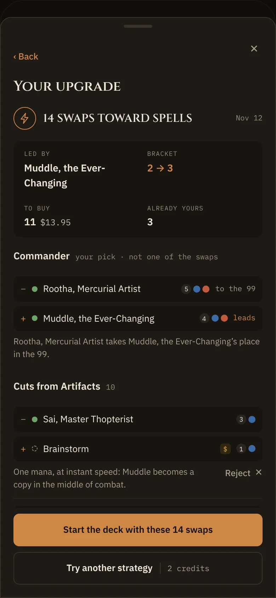
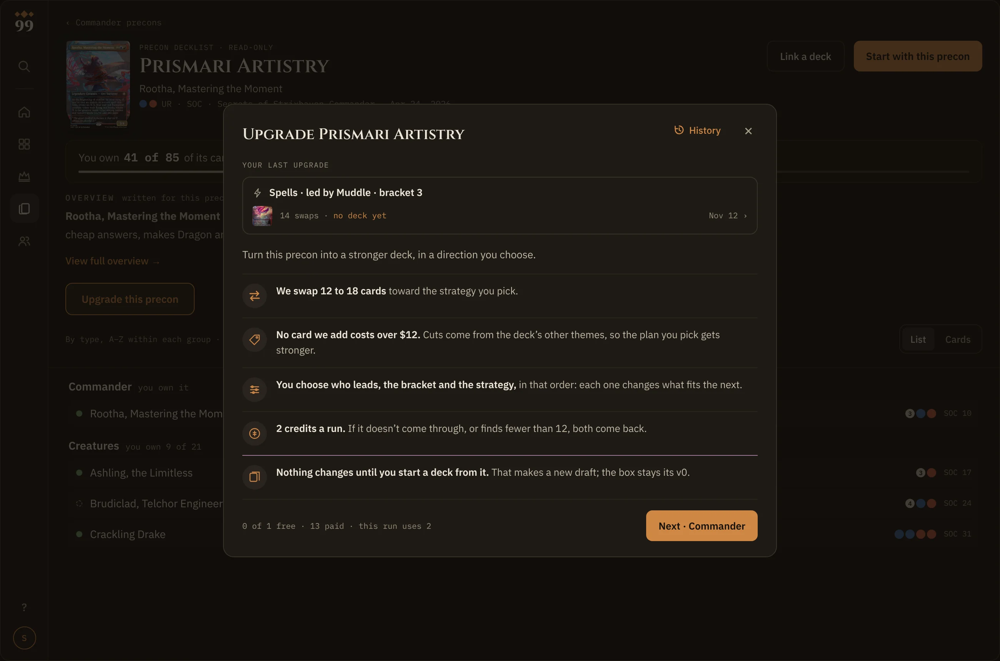
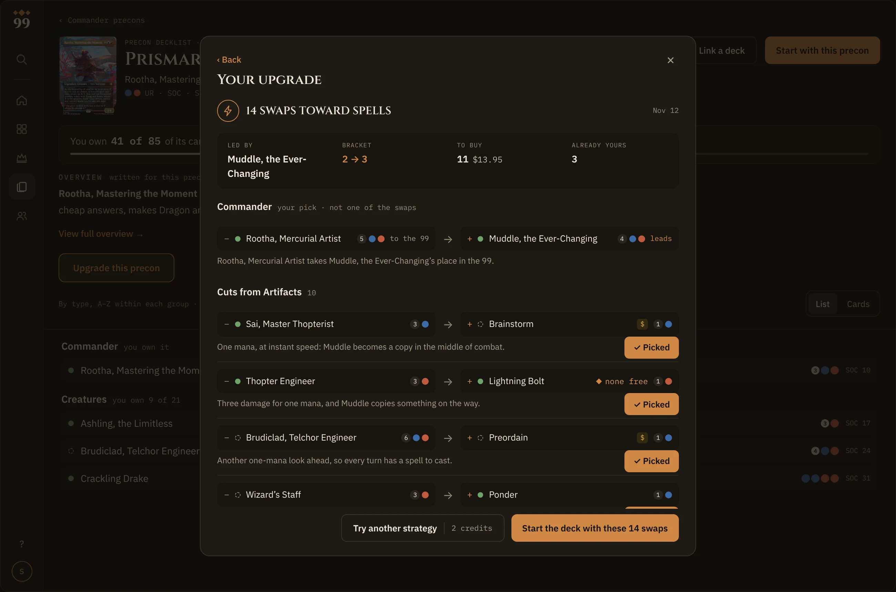
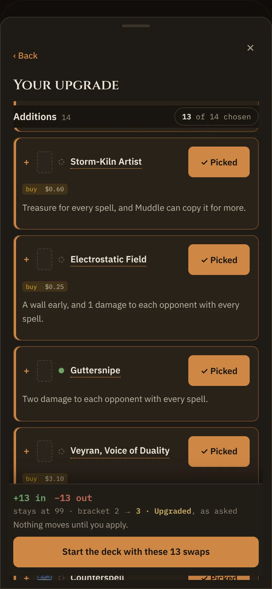
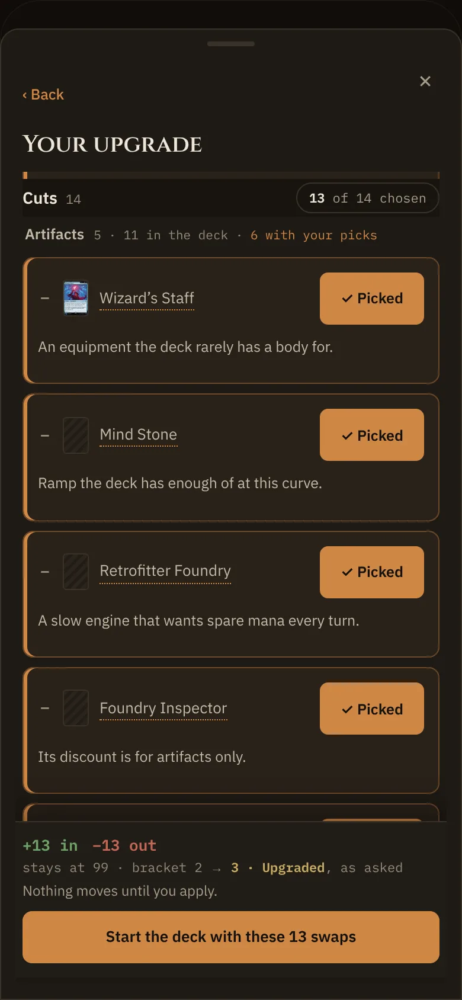
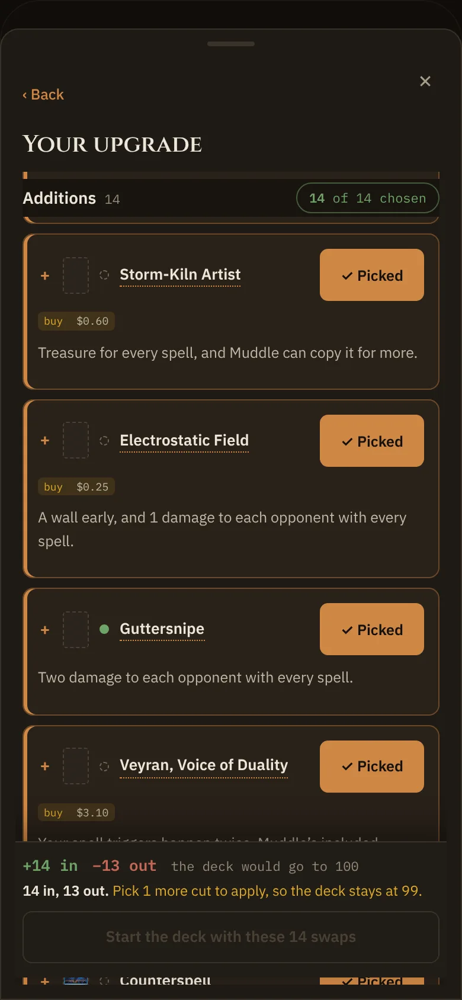
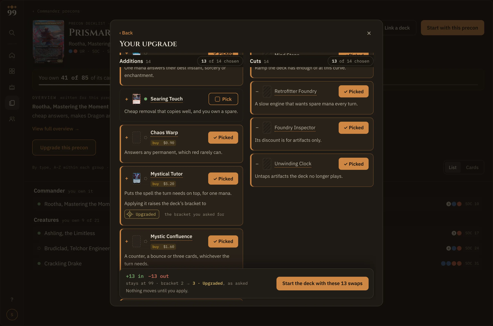
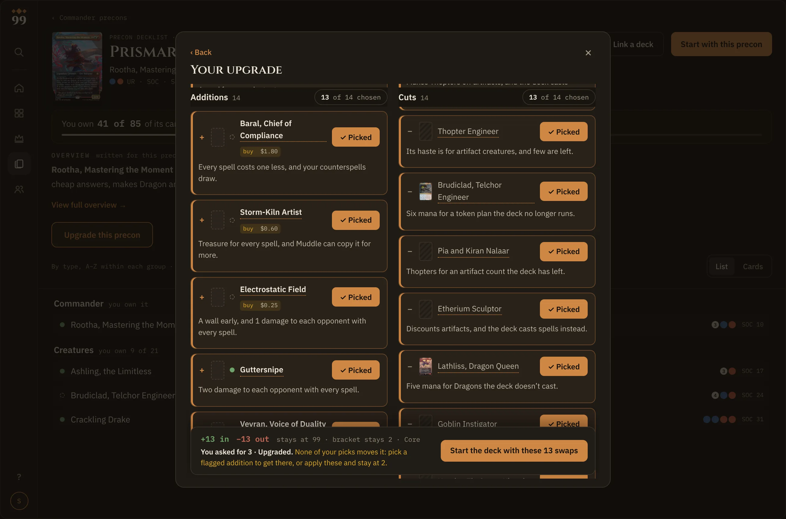
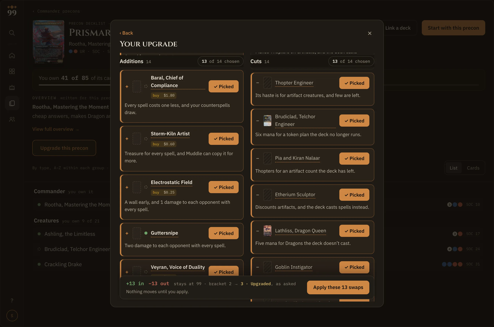

F2 · A finished run with no deck yet: still yours to apply
The reader ran an upgrade and left without starting a deck or applying it. The row says no deck yet in accent ink. Opened, its press is live. On the deck page it's the same screen in the band's flow, with A2c's last intro line and Apply these 14 swaps.
On the precon page

no deck yet in --accent-text: the one word on the row that says it can still be used.

The result as shipped, with ‹ Back. No note: nothing about it is read-only.
Suggested changes' pick lines, every one ✓ Picked, grouped by type with the shipped heads (Instants 7 · 9 in the deck · 15 with your picks). Buy tag and allocation marker as Suggested changes draws them.


The run's head, then Suggested changes' lead and the pinned bar: +14 in −14 out · bracket 2 → 3 · Upgraded, as asked, with Start the deck with these 14 swaps.
Picking adds and cuts separately (R2, #2985): keep Sai, still cut Wizard's Staff for Counterspell

Searing Touch unpicked (Pick, empty box), the rest ✓ Picked. The tab reads Additions 13 of 14.

Sai, Master Thopterist unpicked, so it stays; Wizard's Staff still goes. The bar: +13 in −13 out, Start the deck with these 13 swaps.

Only a cut unpicked: 14 in, 13 out. Pick 1 more cut to apply, so the deck stays at 99. The press is off until they match.

Side by side, each 13 of 14 chosen. Mystical Tutor carries the shipped bracket line: it's the pick that moves the deck to 3.

Mystical Tutor and Mind Stone unpicked: the shipped warning You asked for 3 · Upgraded. None of your picks moves it… The press stays on.
On the deck page (band's flow, A2c)

A2c's last intro line: Nothing changes until you apply the swaps.

The same result; the bar's press reads Apply these 14 swaps, with A2c's one Undo after.

Apply these 13 swaps: Sai stays in this deck, Searing Touch stays out.